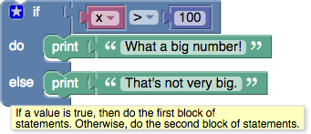
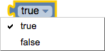
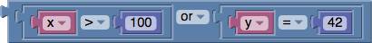

Boolean algebra is a mathematical system that has two values: * true * false
Boolean values (also called conditions) are used in these control block, which contain examples: * conditional blocks * repeat blocks
One of the many examples from those pages is:

If the value of the variable x is greater than 100, the condition is true, and the text "What a big number!" is printed. If the value of x is not greater than 100, the condition is false, and "That's not very big." is printed.
Boolean values can also be stored in variables and passed to procedures, the same as number, text, and list values.
Blocks
If a block expects a Boolean value as an input, it usually interprets an absent input as false. An example is provided below. Non-Boolean values cannot be directly plugged in where Boolean values are expected, although it is possible (but inadvisable) to store a non-Boolean value in a variable, then plug that into the input. Neither of these practices are recommended, and their behaviour could change in future versions of Blockly.
Values
A single block, with a dropdown specifying either true or false, can be used to get a boolean value:

comparisons
There are six comparison operators. Each takes two inputs (normally numbers) and returns true or false depending on how the inputs compare with each other.

The six operators are: equals, not equals, less than, less than or equal, greater than, greater than or equal.
logical operations
The and block will return true only if both of its two inputs are also true.
The or block will return true if either of its two inputs are true.

not
The not block converts its Boolean input into its opposite. For example, the result of:
is false.
As mentioned above, if no input is provided, a value of true is assumed, so the following block produces the value false:
Leaving an input empty is not recommended, however.
This document has been based on the Blockly documentation under the same title by Neil Fraser released under CC BY 3.0